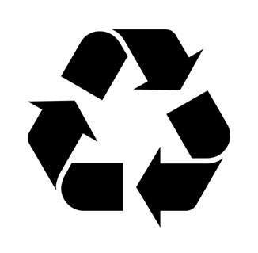

Location
Contact
If you have any questions please shoot us an email ani170@aubg.edu
Partners


Skaptopara Clothing Store is a premium clothing store that offers a huge variety of clothes. It was founded in 2019 by AUBG students on the Skaptopara campus. Its high quality attracts customers from both the university and outside of it. It is a lifestyle retailer dedicated to inspiring customers through a unique combination of product, creativity and cultural understanding. We offer experiential retail environments and a well-curated mix of on-trend men’s clothes, but we focus mainly on hoodies and jeans. Visit our stores, where all are welcome and there’s always something new to see, or shop online get free shipping on your order, straight to your room on the AUBG campus. For special offers, one-of-a-kind prizes and more, you can get in touch with us.
Black Friday Discount
Get your calendars ready because Black Friday is coming! The date to remember is 29 November 2019. So, if you’re getting your Christmas shopping done early or you’re looking to treat yourself to some new clothes, we will have massive discounts on your favourite styles, including our beststelling hoodies and jeans. Basically, everything you could ever need to take your look and give it a remix. Stop by our store to find out more!
Environmentally-friendly
Less than 3% of the world’s croplands are used for cotton for our clothes, yet it consumes nearly 25% of pesticides. Not only is that harmful to our planet, but it also kills thousands of farmers and producers each year who work surrounded by these chemicals and waste.We offer a huge variety of products. That is why we use environmentally-friendly materials to produce our clothes. To check some of them, please click on the Our Products tab. We are using low-impact dyes, upcycling natural materials, and growing organic pesticide-free cotton.